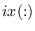

Next: psb_exit Exit
Up: Parallel environment routines
Previous: psb_init Initializes
Contents
call psb_info(icontxt, iam, np)
This subroutine returns information about the PSBLAS parallel environment, defining
a virtual parallel machine.
- Type:
- Asynchronous.
- On Entry
-
- icontxt
- the communication context identifying the virtual
parallel machine.
Scope: global.
Type: required.
Intent: in.
Specified as: an integer variable.
- On Return
-
- iam
- Identifier of current process in the PSBLAS virtual parallel machine.
Scope: local.
Type: required.
Intent: out.
Specified as: an integer value.

- np
- Number of processes in the PSBLAS virtual parallel machine.
Scope: global.
Type: required.
Intent: out.
Specified as: an integer variable.
Notes
- For processes in the virtual parallel machine the identifier
will satisfy
 ;
;
- If the user has requested on
psb_init a number of
processes less than the total available in the parallel execution
environment, the remaining processes will have on return  ;
the only call involving
;
the only call involving icontxt that any such process may
execute is to psb_exit.
Next: psb_exit Exit
Up: Parallel environment routines
Previous: psb_init Initializes
Contents